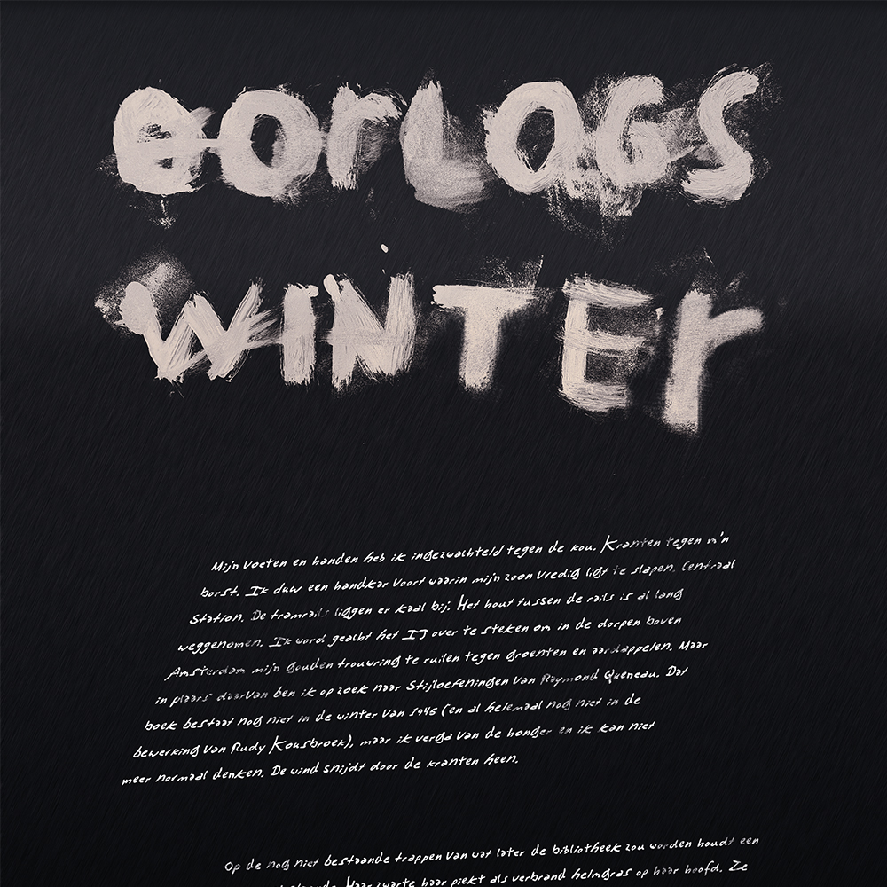
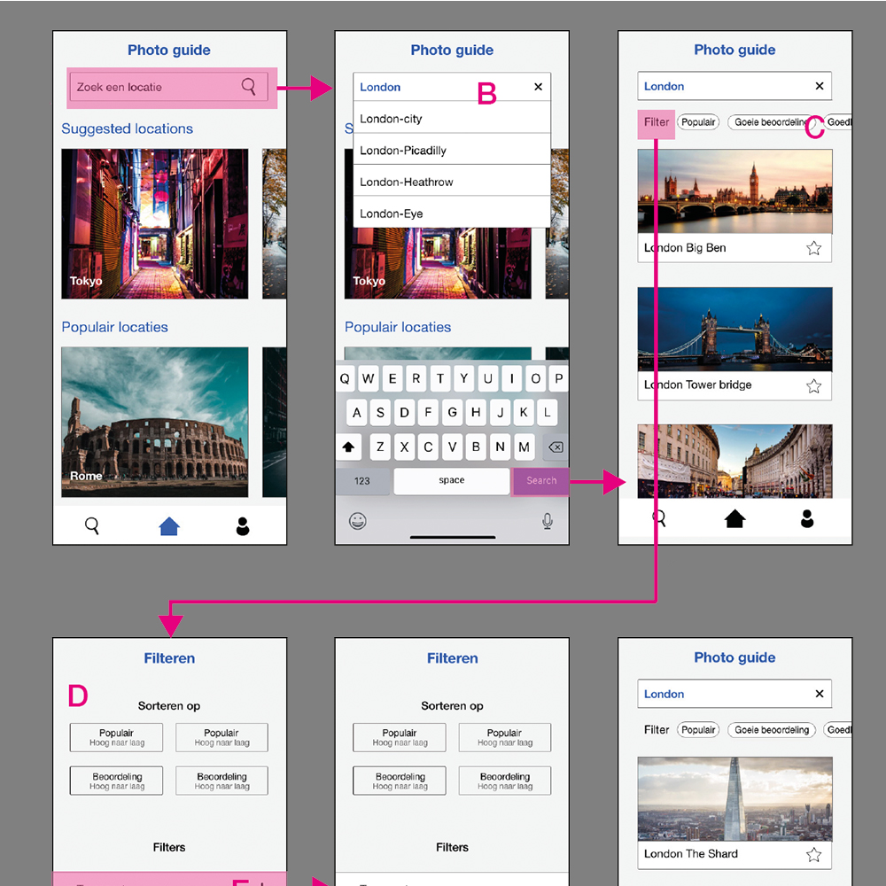
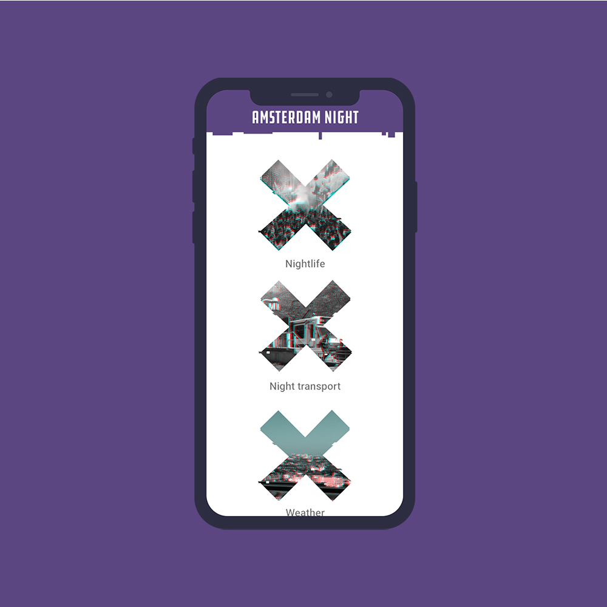

Dit ben ik
Mijn naam is Jeroen Besselink. Ik ben 21 jaar oud en woon in Noordwijk(Zuid-Holland). Ik zit op dit moment in het tweede leerjaar van de opleiding communication media en design op de Hogeschool van Amsterdam. Hiervoor heb ik de opleiding mediavormgever gedaan op het ROC Leiden. Ik vond het erg leuk om dingen te ontwikkelen en te ontwerpen vandaar dat mijn vervolg stap CMD werd. Meer over mij te weten te komen
Vormgeving
Verhaal uitwerken met een sfeerwoord
 read moreDesign patterns
Design patterns onderzoeken en toepassen
 read moreProject ISGA
App uitwerken die de ISGA ondersteunt
 read moreProject ISGA
App uitwerken die de ISGA ondersteunt
read more